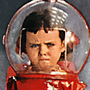

Monday, January the 30th, 2006
back to: title, date or indexes

My name is Sago and I am a glum inmate of Pang Hill Orphanage. I was born in a faraway land. My papa was a crusty man who fell into a pond and never surfaced. Later they found a vent at the bottom of the pond which led to a chute which in turn led to a hideous abode of Doom. My mama collected flies and fleas and similar wee beasts, often but not always wingéd ones. One day, soon after papa plunged down the chute at the bottom of the pond, she took a little paper bag with some of her flies in it to the parliament building of that faraway land, and when she showed reluctance to open the bag to the security guards at the magnetic barrier in the lobby, they shot her dead. That is the kind of land I come from.
I spent a few months living off berries and rainwater and living in a cave on the coastline. Then the captain of an illegal fishing smack scooped me out of the tide pool where I was happily paddling and brought me thousands of miles across the storm-tossed ocean and delivered me to the gates of Pang Hill Orphanage. That is my story in its broad outlines. I would tell you more, but it is time for my morning brain scan. No one at the Orphanage has ever explained to me why each orphan's brain is scanned three times a day, but I have made a plasticine copy of the key to the room behind the canteen in which lurk the filing cabinets where the brain scan results are stored, and soon I am going to skulk in there at dead of night and examine all the results very, very closely and then I am going to shred them, for I fear nobody and nothing. I am glum but stupendously brave and clever, and my name is Sago.
Hooting Yard on the Air, February the 1st, 2006 : “Some Notes on Compartments” (starts around 06:29)
Hooting Yard on the Air, May the 12th, 2016 : “Vox Pop : A Pang Hill Orphan Speaks” (starts around 00:12)